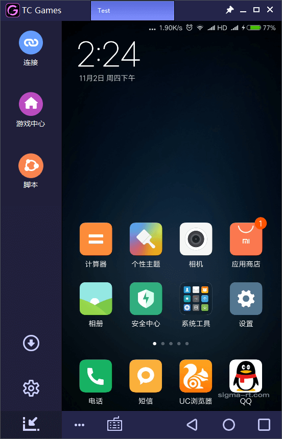

手机游戏上电脑——TC Games 小白五分钟从安装到开玩
第一次接触手机投屏到电脑的工具？这篇文章带你从零开始，不用懂任何专业术语，跟着做五分钟就能用 TC Games 把手机画面搬到电脑大屏幕上，用键鼠玩手游。
你好，欢迎。这篇文章就是给完全没碰过这类工具的小白写的——跟着做，不需要懂什么是投屏、什么是键鼠映射，五分钟之内你就能把手机画面搬到电脑大屏幕上，用键盘鼠标玩手游、刷视频，或者在电脑上打字操作手机。
TC Games 到底是干嘛的——一句话讲明白
打个比方：你的手机是一台"小型游戏机"，屏幕小、触控有时候不太顺手；你的电脑是一台"大屏幕显示器"，有键盘鼠标，操作起来更精准。TC Games官网 就是这两者之间的一座桥——把手机的画面实时送到电脑屏幕上，同时把你在电脑上的键盘鼠标操作"翻译"成手机能听懂的触控指令。
说具体点：你在电脑上装一个 TC Games，手机上装一个很小的辅助程序，用数据线连起来——然后你就能坐在电脑前，用鼠标点屏幕、用键盘打字，玩手机上的和平精英、王者荣耀，或者只是把手机上的视频放大到电脑上看。

五分钟上手——从下载安装到第一次跑通
整个过程分四步，按顺序来，每一步我都告诉你要做什么。
第一步：电脑装软件。安装包从下载拿（Windows 7 及以上都能跑，Win7 需要额外装一个 .NET Framework，下载页一般会有提示）。双击安装，一路默认就行，装完桌面会有快捷方式。
第二步：手机开 USB 调试。这一步很多新手会卡壳，但真的不难，就是找到开发者选项里的一个开关：
- 打开手机的"设置"，找到"关于手机"
- 里面有个"版本号"（小米叫 MIUI 版本、OPPO 叫 ColorOS 版本、vivo 叫 FuntouchOS 版本），连续点它七八下，直到弹出"已进入开发者模式"
- 回到设置主界面，进"开发者选项"，找到并打开"USB 调试"
小米、OPPO、vivo 的手机还有额外的"USB 安装"开关，也一并打开。华为、荣耀、三星直接开 USB 调试就行。
第三步：插线 + 授权。拿一根数据线把手机和电脑连起来——注意别用那种只能充电的线，要能传数据的（实在不确定就换一根试试）。手机上会弹出"允许 USB 调试？"的对话框，勾选"始终允许"然后点允许。
第四步：自动装 Agent + 投屏成功。打开电脑上的 TC Games，它会自动检测到你的手机，然后手机上会弹出一个小辅助程序的安装提示，允许安装就行。装好之后，电脑屏幕上瞬间出现手机的实时画面，鼠标移动、点击，手机上有响应——成功了。
上手后先玩这三个功能
投屏成功的那一刻你可能会有点兴奋，界面上东西很多，不知道该先碰哪个。别瞎点，我给你挑了三个新手最值得先试的，按顺序来。
第一个：键位中心——一键让键鼠适配手游
这是新手最爽的功能。你刚用鼠标点手机屏幕可能会发现，点击没问题，但用键盘 WASD 走不动路——因为游戏里的虚拟摇杆需要专门的按键映射。
TC Games 内置了一个键位中心，已经给和平精英、王者荣耀、原神这些热门游戏提前配好了完整的按键方案。操作很简单：
- 手机上打开你要玩的游戏
- 电脑端 TC Games 界面里找到"键位中心"按钮点进去
- 它会自动读取你手机的分辨率，推荐匹配的键位方案
- 点下载，键位自动套用
套完之后一定要做键位对齐——把电脑上显示的按键标记拖拽到游戏里真实的"开火按钮""技能按钮""摇杆"上面，精准重合。就像把一张透明的贴纸贴在游戏界面上，贴纸的每个标记对准按钮，这样键盘鼠标按下时才会触发正确的操作。
第二个：帧率和码率——决定画面流畅度的两个旋钮
键位搞定了，先别着急开玩。打开游戏跑两圈，看看画面流不流畅。TC Games 有两个直接影响流畅度的参数：帧率和码率。
帧率就是画面每秒刷新多少次。免费版 TC Games 最多 60 FPS——这个已经足够流畅了，肉眼几乎看不出卡顿，放心用就好。VIP 版能到 120 FPS，但绝大多数手游自己就锁帧 60 或 90，开 120 也白开。
码率就是画面每秒传多少数据。免费版上限 16 Mbps，VIP 能到 60 Mbps。码率高了画面细节多、马赛克少，但太高会吃带宽导致掉包。5G WiFi 近距离可以开到 30~40 Mbps，2.4G WiFi 建议不超过 16 Mbps，USB 连接就放心开。
如果玩的时候感觉画面卡或者掉帧，按这个顺序调：先降码率，再降帧率，最后降分辨率——通常降一个档就解决了。
第三个：换连接方式——USB 最稳，WiFi 最方便
刚才用的 USB 连接是最稳的方案，延迟低、画质好、不受网络波动影响。但数据线绑着有时候不太舒服，想自由走动的话可以试试 WiFi 连接——TC Games 同样支持，扫一下码或者输个配对码就能无线连。
如果你手机支持 HDMI 视频输出，还有个终极方案——去TC Games文档翻一下 HDMI 直连的完整步骤就明白：用 HDMI 转接线直接连显示器，画面零延迟、原生输出，配合 USB 线提供键鼠控制——适合玩竞技游戏或者直播，就是需要额外买一根转接线。
小白的三个常见疑问
第一次用难免遇到点小问题，这里提前帮你排三个最常踩的坑。
Q1：找不到开发者选项？连续点版本号没反应？先确认你点的是对的那个——小米在"我的设备 → 全部参数与信息"里，OPPO 和 vivo 在"关于手机"里，华为荣耀也是"关于手机"。如果确实找不到，在设置顶部搜索框搜"开发者选项"直接跳过去。
Q2：USB 调试开了但电脑没反应？十有八九是数据线只能充电。换一根确定能传数据的线，再不行换电脑的 USB 接口——优先插机箱后面主板上的口，前面板有时候接触不良。手机上把 USB 模式切到"文件传输（MTP）"也能解决部分识别问题。
Q3：投屏画面卡、有延迟？先别急着升级硬件，大概率是参数没调好。打开 TC Games 设置，把码率先降到 16 Mbps 试试，还卡就把帧率降到 60 FPS，再不行把分辨率从 1080P 降到 720P。WiFi 连接的话把手机和电脑靠近一点，别隔墙。
写在最后
好，到这里你已经能比较自如地用 TC Games 了。别着急追求 1080P + 60M 码率的极致画质——先把 720P + 16M 跑稳，确认键位对齐准确、画面流畅，再慢慢往上调。
进阶方向给你一个提示：如果玩竞技类射击游戏对延迟特别敏感，可以试试 HDMI 直连的方案——画面不走电脑直接到显示器，键鼠控制走 USB，零延迟的体验完全不一样。文中涉及的配置参考资料我都备了份，GitHub、Gitee 和 GitCode 各存了一份完整目录，按需查哪个都行。